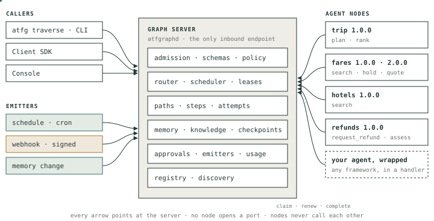
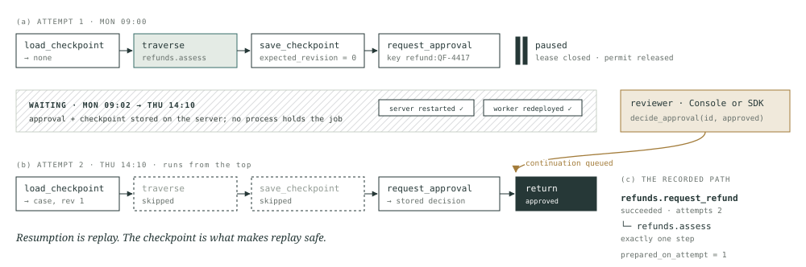
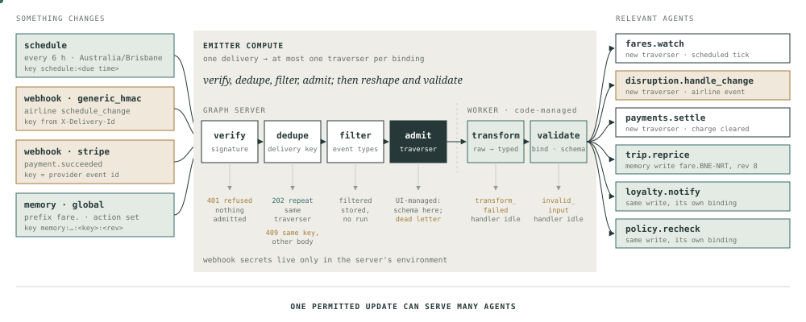
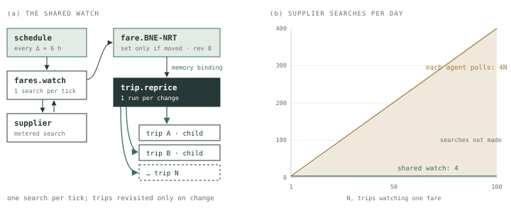
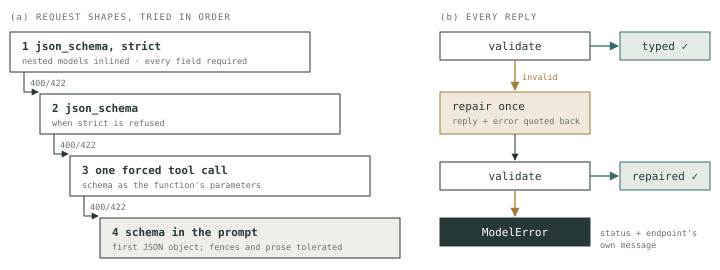
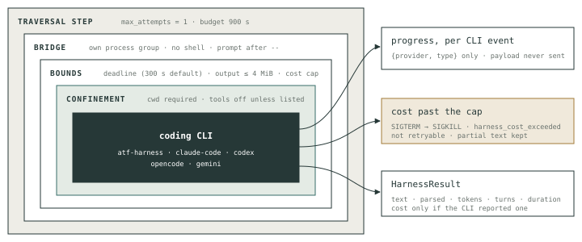
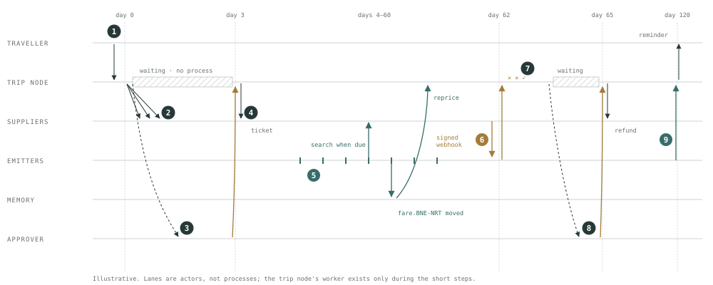

Part I. Durable execution for travel agents
Abstract
Our objective is to solve some of the hardest problems in travel with frontier AI. How can a travel job remain coherent when workers restart, suppliers reply late and people approve actions hours later?
An agent’s work may outlast a model response, a worker process or a human approval. atfgraph provides a shared runtime for that work: it routes calls, records execution, schedules attempts, preserves state and supports decisions made later. This paper examines the supplied atfgraph snapshot as a framework-independent execution service with a Python authoring surface. We explain how existing agent code fits inside it, how a paused run continues and what an execution graph can actually show. We then connect those runtime primitives to Studio’s brief-to-agent build process. The central constraint is that durable records do not make arbitrary outside actions happen exactly once. Reliable applications still need replay-aware code, appropriate instrumentation and explicit approval checks.
Research draft · revised 23 November 2026. Proposed invariants and illustrative examples are labelled. Existing saved results retain their original provenance; no new empirical evaluation is claimed.

Inspect an interrupted job
- Prepare
- Checkpoint
- Wait
- Continue
- Effect
- Receipt
The decision is stored durably and the handler re-enters with the same logical run identity. Completed preparation can be reused if its inputs remain valid.
1. The unit of reliability is the travel job
The research objective is to solve a difficult property of travel work: a journey outlives the process that first planned it. A fare search can finish in seconds, an approval arrive tomorrow, and a supplier amendment remain unresolved for days. A conversational response is not the appropriate unit for tracking that work.
We distinguish three identities. A run identifies the logical job. An attempt identifies one execution of a handler. An effect identity identifies a particular request to change an external system. Preserving the run identifier across a restart does not automatically preserve the external effect identity, and preserving either identifier does not establish that a provider deduplicates it.
The public platform report describes Keel’s governed tools and ATFStudio’s operating surfaces. It provides useful adjacent architecture, but it is not direct evidence about the ATFGraph implementation reviewed in the earlier manuscript. We keep the two provenance lines separate.
What a trace explains
An execution graph records routed or explicitly instrumented work. It can explain which worker was called, what prerequisite it consumed and where an approval paused progress. It is not an attribution graph of neural computations, and it does not reveal why a language model internally preferred a plan. This paper’s diagrams concern operational causality.
2. A response is shorter than a job
An agent can finish a useful answer while the real job is still waiting. Someone needs to approve a change. A report needs tomorrow’s data. A worker disconnects after sending a request. These situations need a durable place for the job to live.
atfgraph separates that operating layer from the application’s model choices and business logic. A graph server routes registered capabilities, workers run the code, and each run leaves an inspectable path. The service includes queues, retries, shared state, approvals and execution records. Travel is one application; the same model applies to research, support and software work.
3. Any framework, through an explicit boundary
Existing agent or framework code can run inside a registered handler. Calls that should appear as separate steps go through the runtime. Independent calls can run side by side; later work can depend on their results. The resulting graph records the execution that happened rather than requiring a separately drawn workflow for every path.
“Any framework” describes the integration model, not a claim that every framework has been individually certified. The supplied implementation uses Python workers. Code can retain its own model loop, but routing, cancellation, state and telemetry need to be connected deliberately. Internal actions stay inside the handler unless they are reported or exposed as routed steps.
A managed service can operate the shared runtime while teams retain their workers and application logic. The snapshot also describes local and self-hosted deployments. Installing a client or publishing an endpoint does not start a worker; the execution service and the relevant workers must actually be running.
4. A formal model of durable work
Model scope. The equations below are definitions and proposed invariants introduced in this paper to formalise the documented behaviour. They are not quoted from the source report, proofs of the implementation, or measured results.
There are two related objects: the record of routed calls and a model of work dependencies. The timing equations use a finite, acyclic dependency graph. A parent–child relationship in the execution record does not automatically mean the parent finishes before the child begins.
V contains work units. E contains prerequisite edges: u must complete before v can start. The precedence relation is causal, not just a display order.
- V, E
- Work units and prerequisite edges in the timing model.
- ≺
- A required before-and-after relationship. This is related to causal ordering, not a claim about model reasoning.
Causal order provides a useful foundation for interpreting concurrent work. For these timing calculations, use the durations of individual work units. Do not add an inclusive parent timer to child timers it already contains.
The run cannot finish sooner than its longest chain of dependent work. Queuing, contention, retries and human waiting can make it longer.
- 𝒫(G), dv
- Dependency paths in G and non-overlapping work-unit durations. Durations must use the same time unit.
If all k jobs start together, have enough resources and incur no added coordination cost, their combined stage finishes with the slowest job.
G3 is an ideal timing identity, not a speedup measured for atfgraph. Real capacity limits and dependencies determine how much overlap the runtime achieves.
The run identity is retained while the attempt count increases. Continuation restarts the handler; it does not restore an arbitrary instruction pointer.
- rk, ak
- The run identity and attempt number before and after a continuation.
Checkpoints allow completed preparation to be reused. An outside action can still succeed just before a crash and before its result is saved. Retry logic must resolve that uncertainty rather than treating a missing response as proof of failure.
Deployment requires the retrieved file set to match the accepted file set’s fingerprint. This is necessary, not sufficient: deployment permission and checks still apply.
- H(F)
- The file-tree fingerprint used by the reviewed deployment path.
- Fapproved
- The exact file set accepted in the review.
The source documents and tests this accepted-file comparison. Its guarantee is limited to the paths that perform the comparison, with the recorded digest and trusted deployment boundary intact.

5. Case study: a decision arrives after a restart
The worker is gone. The job is still waiting.
An agent gathers supporting information, saves it and asks a person to approve the next action. The runtime records the pending request and releases the worker’s capacity. It does not keep that handler blocked until the person returns.
After the decision, the same run is queued under a fresh attempt. The handler starts again from the beginning. It loads the saved preparation and asks for the same approval using its stable operation key. The recorded decision is returned. The application then branches on approval or rejection.
The snapshot explicitly describes this replay model. A checkpoint can avoid repeating saved preparation, but it does not make an earlier external action atomic with the save. If a remote change succeeded just before a crash, the next attempt must establish that outcome before doing it again.
Likewise, approval is a recorded decision rather than an automatic enforcement of every subsequent line of application code. Both approval and rejection can resume the handler. A correctly written handler must stop or choose a different action when the decision does not permit the proposed one.

6. Read the path as evidence
A useful run record connects a request to the capabilities it invoked, their attempts and their returned outcomes. Parallel branches can show which work happened independently. A retry can show that an earlier attempt did not finish cleanly. The record helps a reviewer ask what happened before trusting a summary.
Execution success and decision quality are different. A handler may run successfully and still return a poor recommendation. The supplied documentation discusses recording confidence and fallback behaviour separately. Confidence must be calibrated against labelled outcomes before it becomes a reliable basis for permission.
These are execution graphs: records of calls, attempts and results. They do not expose a model’s internal reasoning. A useful inspection connects the reported action to its actual invocation and returned evidence; a fluent explanation alone is not enough.

7. From brief to software agent factory
The same runtime can support an agent that builds other agents. Studio accepts a brief, delegates work to a coding harness, records the plan and build, presents files for review and prepares deployment. This makes “agent factory” a concrete sequence of reviewable work rather than an unbounded instruction to produce software.

A particularly useful boundary is the accepted file set. The snapshot records a fingerprint of the reviewed files and compares it with the files retrieved for deployment. A mismatch stops deployment. Acceptance of one version should not silently authorise a different version.
This is still conditional on the configured harness, permissions, deployment route and healthy workers. Passing fixture tests does not prove behaviour against every real business system. The reviewed files and test evidence remain part of the decision to release.

8. Durability and the limits of replay
A checkpoint cannot, by itself, prove exactly-once effects
Consider an external effect followed by a local checkpoint, with no shared atomic transaction. If a crash can occur between them, the absence of the checkpoint cannot distinguish “effect did not happen” from “effect happened but was not recorded”.
Argument. The two executions end in the same local state but different external states. A retry based only on local state must behave the same in both. It therefore cannot both retry a missing effect and avoid repeating a completed one without additional information or a provider-side deduplication contract.
This indistinguishability motivates a recovery protocol rather than a stronger slogan. Persist the intent before dispatch, retain a stable identity, obtain authoritative supplier evidence when an outcome is unknown, and use an idempotent participant interface where it is actually supported. If the participant cannot resolve uncertainty, expose the unresolved case for operations instead of inventing a terminal success.
Progress assumptions
Eventual completion requires more than durable storage. A worker must eventually be available, its prerequisites must become satisfiable, approvals must arrive or expire, and the external system must provide a usable outcome. A runtime may preserve a waiting job indefinitely without satisfying any of those liveness conditions. Report time spent waiting separately from active compute and queue delay.
9. What the supplied evidence supports
| Capability | Evidence reviewed | Important limit |
|---|---|---|
| Durable runs and routed paths. | Overview, core concepts and framework integration guide. | A path captures routed or instrumented work; it does not expose every internal action. |
| Approval continuation and checkpoints. | Approval guide and its documented restart-test contract. | Continuation restarts the handler. Side effects need replay-aware handling. |
| A brief-to-agent workflow. | Studio guide and build, deployment and hardening test definitions. | A build is not a deployment; accepted files and deployment approval remain distinct. |
| Framework-independent operation. | Integration guide describes retaining framework code in handlers. | Compatibility and telemetry must be verified for each integration. |
The earlier review inspected the supplied documentation and test definitions. It did not rerun release acceptance checks, measure production availability or verify every framework integration. The paper reports no new throughput, cost or reliability benchmark.
10. Test the interruptions, not just the happy path
Restart the worker before and after each saved checkpoint. Approve and reject the same prepared request after a server restart. Repeat the same decision, then attempt a conflicting one. Check whether the run identity, saved context and decision remain coherent.
For external side effects, include a remote success followed by a lost acknowledgement. Measure duplicate effects, unnecessary repeated preparation and the time to a known outcome. For the agent factory, change one file after review and verify that deployment stops. Report unsupported paths and unknown outcomes rather than excluding them from the results.
The remaining research question is how much operational evidence an application should expose without overwhelming reviewers. A durable runtime supplies the structure. Application authors decide where useful boundaries belong, and evidence from real tasks must show whether those boundaries are sufficient.
11. Discussion and conclusion
ATFGraph addresses the mismatch between short-lived workers and long-lived travel jobs. Durable identities and explicit continuation make work inspectable across interruption; they do not eliminate ambiguity in external effects. The evaluation must test the crash windows and unresolved obligations that determine whether a real journey can safely continue.
Appendix A · interruption experiments
Algorithm G · proposed restart-aware handler
open logical run r and begin attempt a read checkpoint and outstanding external intents reuse completed preparation only if its inputs remain valid for each unresolved effect: reconcile using its original identity if human approval is required: persist the wait and return resume by re-entering the handler after the decision is stored perform newly permitted work through governed adapters finish with a per-obligation outcome, not only a run status
| Interruption | Required invariant | What to measure |
|---|---|---|
| Worker exits after requesting approval | Run and review request remain addressable | Lost waits; duplicate review requests |
| Approval arrives twice | One logical decision is consumed consistently | Duplicate continuation effects |
| Supplier succeeds before checkpoint | Original effect identity is preserved | Unknown outcomes and duplicate effects |
| Approved artefact changes | Deployment rejects the mismatched digest | Accepted-file comparison coverage |
| Dependency retries under contention | Causal prerequisites are preserved | Queue time, active time, retries and critical path |
For a meaningful release study, specify the store, worker count, failure schedule, timeout policy and participant duplicate semantics. Report raw event traces and unresolved outcomes in addition to aggregate completion rates. A benchmark that kills a worker only between successful steps does not test the most important crash interval.
Part II. ATFGraph: Keeping the Promise
Abstract. An agent that sells travel makes promises that outlive the conversation. A booking waits days for a manager, is watched for weeks for a price drop, and is disrupted months later by a schedule change it must notice and repair. We describe ATFGraph, a runtime in which an agent's work is a recorded walk through a graph of capabilities, owned by one server. Workers hold work only under leases, so a lost worker loses nothing that was finished. Pauses are server state, so a job can wait for a person with no process alive. Events from clocks, suppliers and memory admit exactly the work that needs them, through a component we call emitter compute. We set out the model, the guarantees each mechanism gives, and the travel problems each one exists to solve.
Suppose a traveller asks for Brisbane to Tokyo in April, under $1,200, with a hotel near Shinjuku. Finding the trip takes seconds. Keeping the promise takes four months.
The fare needs a manager's approval because it is a work trip, and the manager answers on Thursday. Once ticketed, the fare is worth watching: if it drops, some fares can be rebooked for the difference. Six weeks out, the airline moves the flight by nine hours and the hotel check-in no longer lines up. The refund for the unused night is above the desk's automatic limit, so a person has to approve it. None of these moments is predictable, and almost all of the elapsed time is spent waiting for one of them.
Agents today are built for the conversation, not the trip. They run while someone is typing, and when the session closes their context goes with it. Holding a process open for four months is not an answer, and neither is a cron job that re-runs the whole agent and hopes it remembers. ATFGraph takes a different position: the job is the unit, not the process. Every step the agent takes is written down by a server the agent does not control. Waiting is a state the server stores, not something a program does. When something changes in the world, the server starts work for exactly the capabilities that asked to hear about it.

1.Travel is a long, many-party transaction
Travel is not the only domain where agent work outlives a session, but it combines the hard cases at once. We name six properties, because each one later maps to a mechanism.
- Long duration. A trip runs from enquiry to return, so a single job lasts days to months.
- Many parties. One trip involves an airline, a hotel, a payment provider and often a person who must approve. Each answers on its own clock.
- Volatile state. Fares and availability change by the minute. A price seen during planning is a claim, not a fact, until it is checked again at the point of purchase.
- Irreversible actions. Holds, tickets and refunds move real money. Doing one twice is worse than not doing it.
- Metered suppliers. Suppliers ration searches against bookings. An agent that polls freely is throttled or cut off.
- Unprompted events. Schedule changes, cancellations and payment confirmations arrive without being asked for.
A useful way to see why a conversational process is the wrong container is the duty cycle of the job. Let a job run for elapsed time , and let its steps run for active durations :
When is close to zero, anything that costs money or memory per unit of elapsed time is spent almost entirely on waiting. The design that follows treats the wait as data and the compute as short, leased bursts.1
2.The model in ten nouns
The vocabulary is deliberately small, and the command line, the console and the SDK use exactly these words. A graph server owns the graph. It routes every call, schedules work, stores memory and records what happened. It is the only inbound endpoint in the system: clients call it, workers connect out to it, and nothing calls a node directly.
An agent node is a deployable process that registers a label (for example fares), a version, and a set of capabilities. Registration is immutable per version; to change what a node offers, you register a new version. Capabilities come in four kinds:
| Kind | Declared with | Contract |
|---|---|---|
| traversal | @app.traversal() | Decides its own route; may call models and other capabilities. |
| skill | @app.skill() | Deterministic: no model, no routing. Wraps an API, a query or a computation and returns. |
| decision | @app.decision() | One typed judgement that reports its own confidence, so unsure answers can be counted per capability. |
| realtime | @app.realtime() | A live voice or media session opened by the node; listed and published, but never admitted as a traverser. |
A large node can split its capabilities into routers, one per desk (intake, flights, hotels), which the node includes. The code is organised by team, and every capability is still addressed as label.capability.
A traverser is one live walk through the graph, started by a request or an event. It has an identifier, a status, memory, and a path: the recorded sequence of steps it took. A step records which target was called, by which parent step, with what status, attempt number and elapsed time. A session groups many traversers into one conversation. An emitter starts traversers without a caller. A harness runs a coding agent as one bounded step.

A traverser moves through a small, closed set of states. The set is worth stating exactly, because later guarantees are statements about which transitions are allowed and who may cause them.

waiting is not terminal, so a caller's wait passes straight through a pause. Edges show allowed transitions, not their frequency.Inputs and outputs are typed. A handler's signature becomes its input schema and its return annotation becomes its output schema. The server validates input at admission, so a malformed request is rejected before any worker sees it. It validates output at completion, so a handler that returns the wrong shape does not end succeeded. A missing field or an unknown field fails with invalid_input, marked not retryable, because trying again would not fix it.
A skill is the boundary at which an external system becomes usable by a model. A supplier's API is never shown to a model directly. The model sees a skill, with the parameter names, docstring and error handling its author chose, and every call to it is a recorded step.2 The layering is: supplier API → @skill → capability → tool. A model can only use a supplier once that supplier has been wrapped in something typed, bounded and observable.
3.Graphs that are traced, not declared
Workflow engines usually ask you to declare a graph and then walk it. ATFGraph works the other way. The code of each traversal decides at run time what to call, and the server records what happened. Every await app.traverse(target, …) inside a handler submits a child traverser that carries three things: the parent's step id, the parent's lease token, and an operation key. The server records an edge from the parent step to the child, checks access policy, and queues the task for whichever node registered that label. The caller never learns another node's address.
The orchestrating node for the opening example plans a trip in three levels:
trip_node.py · adapted from the framework guide@app.traversal() async def plan(origin: str, dest: str, date: str, nights: int = 3) -> dict: # level 1: three independent searches on three nodes, run together fares, hotels, weather = await asyncio.gather( app.traverse("fares.search", origin=origin, dest=dest, date=date), app.traverse("hotels.search", city=dest, checkin=date, nights=nights), app.traverse("weather.today", city=dest), ) # level 2 needs all three; level 3 needs the ranking choice = await app.traverse("trip.rank", fares=fares, hotels=hotels, weather=weather) held = await app.traverse("fares.hold", offer_id=choice["fare"]["offer_id"]) return {"choice": choice, "hold": held, "requires_review": True}

trip.plan seen three ways. (a) The recorded path. (b) The same steps on a time axis: the parent spends most of its life waiting on children, and gives up its worker permit while it waits. (c) The dependency graph, which exists only as a trace. Timings are illustrative; the shape is what the server records.Because a parent may fail and be retried, re-running its code would re-submit its children. The SDK prevents that with the operation key. Let count the calls a handler has made so far:
A retried parent asks for the same and the server hands back the existing child rather than creating a second one. A retried attempt of trip.plan, after the hold succeeded, therefore does not place a second hold. In travel, that one line is the difference between a retry and a double booking. This protects retried attempts. A continuation after a pause (§5) is different: the handler starts again from the top, and the author guards work done before the pause with a checkpoint.
The same primitives give every classic workflow shape, without a workflow language:
| Shape | Written as | What the path shows |
|---|---|---|
| Sequence | a = await traverse(…) then b = await traverse(…, a) | A chain of child steps |
| Fan-out, fan-in | asyncio.gather(*[traverse(…) for x in xs]) | Parallel children, outputs in order |
| Branch | an if, or a decision with a confidence | Only the branch taken exists |
| Dynamic routing | app.ai(…, tools="self" | "discover") | One child step per tool call |
| Retry | RetryableError with max_attempts | Attempts on the same step |
| Pause | await app.request_approval(…) | The traverser waits, then resumes |
| Event start | triggers=[ScheduleTrigger(…)] | A traverser with no caller |
Sometimes the graph is not known until a model plans it. A planning decision returns tasks with dependencies, and the runner groups them by topological level, refusing a cycle:
Everything at one level runs concurrently, and each task receives the outputs of the tasks it depends on. If the targets are discovered at run time rather than written in, each task can land on a different node.
4.Durability: leases, attempts and three clocks
A worker never owns work; it borrows it. A task is claimed under a lease that the worker keeps alive with a heartbeat. The heartbeat runs in its own task, so even a handler that blocks a thread keeps its lease. If the worker disappears, the lease expires and the server puts the traverser back in the queue. If the old worker was only partitioned and later tries to report a result, that completion carries a stale lease token and is rejected. This is the classical lease construction3, applied per step.

Errors are terminal by default. A handler that raises an ordinary exception fails its step, marked not retryable. To ask for another attempt, a handler raises RetryableError and the capability declares a budget with max_attempts. The server then schedules the next attempt on the same step, logs a requeued event with the error, and increments the attempt the handler can read:
The second half of (4.1) matters in §5: resuming after a person decides is not charged to the failure budget. In the framework's disruption example, a model provider answers 503 twice and then succeeds. The rebooking note is produced on attempt 3, two requeued events are logged, and the provider is called exactly three times. A provider error that would fail again, such as a malformed request, is deliberately left terminal so that it fails once.
| Clock | Set by | On expiry |
|---|---|---|
| Handler budget | timeout_seconds on the capability (default 300) | The worker stops the handler; the step fails with handler_timeout, not retryable. |
| Server deadline | The server, from the same registered budget | If the worker itself is gone, the server marks the traverser timed_out. |
| Caller's wait | timeout= on the waiting call | The caller stops waiting; the traverser keeps running until it is cancelled. |
Cancellation is cooperative and propagates. Cancelling a root cancels every child that is still running. The worker learns of it at its next lease renewal and cancels the handler task, which sees the cancel at its next await. Long loops also poll app.cancel_requested() so that partial work is reported as progress rather than lost. Progress is itself durable: app.progress(data) appends an event to the task's log, which any authorised caller can stream while the run is live or read back afterwards. A synchronous handler runs in a thread that cannot be interrupted, so its result is simply discarded. This is one reason the guides prefer async def for anything long.
5.Time: pauses, approvals and replay-once
A pause is the central idea of the runtime, and it is easy to describe wrongly. When a handler calls await app.request_approval(prompt, operation_key=…, checkpoint=…), three things happen on the server. It stores the approval as pending, closes the task's lease, and moves the traverser to waiting. Inside the worker, the call raises an internal control signal that stops the handler at that line and releases its permit. Nothing is held while the reviewer thinks: no process, no thread, no open connection.
When someone decides, the server queues a continuation for the same traverser. The handler does not resume from the line where it stopped. It runs again from the top, under a fresh lease, with the attempt number increased by one. On that run, request_approval with the same operation key returns the stored decision instead of pausing. Resumption is therefore replay, and the job of the author is to make replay safe. That is what checkpoints are for.
- procedure RequestRefund(ticket, amount)
- case ← load_checkpoint("refund case")
- if case = ∅ then ▷ first attempt only
- record ← traverse("refunds.assess", ticket) ▷ one child step, ever
- case ← {ticket, route, fare, amount, prepared_on_attempt = a}
- save_checkpoint("refund case", case, expected_revision = 0) ▷ create only
- if case.amount ≤ LIMIT then return approved by desk policy
- d ← request_approval(prompt(case), key = "refund:" ∥ case.ticket, checkpoint = case)
- ▷ attempt 1 stops at line 8; attempt 2 receives d here
- return {status = d.status, attempts = a, prepared_on_attempt = case.prepared_on_attempt}

prepared_on_attempt = 1. The days are illustrative; the test runs the same sequence across a restart of both server and worker.Three server rules make Algorithm 1 sound rather than merely conventional. An approval is keyed by the pair (traverser, operation key), so asking again with a different prompt is refused as 409 approval_conflict. Building the prompt only from the checkpoint guarantees it is byte-identical on replay. A decision is approved or rejected; repeating the same decision is harmless, but a different second decision is refused as 409 approval_decided. And by (4.1), the continuation does not count against the failure budget.
| Property | Mechanism | Enforced by |
|---|---|---|
| Pre-pause work runs once | load_checkpoint, then save_checkpoint(…, expected_revision=0) | Handler, with the server's revision check |
| The same question on replay | Build the prompt from the checkpoint | Server: otherwise approval_conflict |
| Children not re-submitted | Guard traverse behind the checkpoint | Handler; the path shows one step |
| One decision | Approved or rejected, repeat is idempotent | Server: otherwise approval_decided |
| Continuation is not a failure | max_attempts raised by one | Server |
Because the pause is server state, a deployment can happen during it, with one consequence. A continuation is claimed by (label, version) like any task, so the version that paused must still be served when the decision arrives. The code that runs on the continuation is whatever is deployed at that moment. Keeping pre-pause effects behind a checkpoint is what makes that safe.
Checkpoints are also useful without a pause. A handler with max_attempts > 1 that performs an external effect, such as placing a hold, saves a marker before the call and checks it on retry.4 Section 9 uses the same pattern to put a person between a coding agent's plan and its edits.
6.Emitter compute: something changes, the right agents wake
Sections 4 and 5 explain how a job survives while it waits, and how a person's decision resumes it. This section explains how work starts when nobody calls. In travel, most of the reasons to act come from outside: a clock (a fare-watch interval, a check-in window), a supplier (a schedule change, a cancellation), a payment provider (a charge cleared), or another agent writing something down. ATFGraph calls these sources emitters. We call the work of turning them into exactly the right traversers emitter compute. On the server it authenticates, deduplicates, filters and admits. For bindings declared in code, the worker then reshapes and validates. In ATFGraph terms, an agent "waking" means a new traverser admitted to the capability bound to that event. That traverser reads whatever state the trip has left in memory.
An emitter is a persistent definition on the server that admits one traverser per delivery. It is either a schedule, a webhook source, or a memory source. Capabilities declare their emitters in code, and the worker synchronises them when it starts:
declaring emitters · adapted from the framework guide@app.traversal(triggers=[ScheduleTrigger(cron="0 */6 * * *", input={"route": "BNE-NRT"})]) async def watch(route: str, trigger: TriggerContext) -> dict: ... @app.traversal(triggers=[EventTrigger(source="generic_hmac", types=["schedule_change"], secret_env="AIRLINE_HOOK_SECRET", transform=to_change)]) async def handle_change(change: ScheduleChange, trigger: TriggerContext | None = None) -> dict: ... @app.traversal() @on_event(source="memory", config={"scope": "global", "prefix": "fare.", "actions": ["set"]}) async def reprice(key: str, revision: int, value: dict | None = None) -> dict: ...
Synchronisation upserts one code-managed emitter per (capability, source) pair, and marks bindings that have disappeared from the code as orphaned and disabled. Emitters created by hand in the console are UI-managed, and a sync never touches them. The difference matters for input. A UI-managed delivery is validated against the capability's schema by the server and reaches the handler unchanged. A code-managed delivery passes through the binding's transform on the worker first, which turns a provider's envelope into the handler's own types, and is then bound and validated before the handler runs.

6.1Exactly the right number of runs
Every delivery carries a delivery key, and the server deduplicates on it. For schedules, the key is derived from the due time, so a server that restarts never fires the same due time twice. For webhooks it comes from the provider (a Stripe event id, a GitHub delivery id) or from a header the binding names. For memory, it is memory:<scope>:<scope_id>:<key>:<revision>. Writing for a delivery with key and body :
Suppliers retry webhooks, networks duplicate them, and operators replay them by hand. Equation (6.1) is what makes all three safe for a booking system. A wrong signature is refused with 401 and admits nothing. An event type the binding did not ask for is stored as filtered with no traverser, so it can be audited without being acted on. A UI-managed delivery whose payload fails the schema lands in a dead-letter list with invalid_input, and the depth of that list is reported as a metric. A code-managed delivery that fails its transform or validation fails its traverser before the handler runs.
| Source | Signature checked | Event type and delivery key |
|---|---|---|
stripe | HMAC over timestamp and body | Provider's type and event id |
github | HMAC-SHA256 over the body | Event and delivery headers |
slack | Versioned HMAC over timestamp and body | Event callback |
generic_hmac | Hex HMAC in a named header | Headers the binding names |
generic_bearer | Bearer secret | Headers the binding names |
databricks | Basic or bearer | Configurable paths in the payload |
6.2Memory as a nervous system
A memory source fires when a key is written or deleted. Its configuration names a scope, an optional key prefix, the kinds of entry to watch (values or vectors) and the actions (set or delete). Each matching change admits one traverser to the bound capability, with the key, scope, action, revision and principal as input. The value is included too if it is 16 KiB or smaller. Two properties keep this safe. A failed admission never fails the memory write that caused it; it is counted instead. And the revision in the delivery key means a replay cannot run the same change twice.
This turns memory into a coordination surface. One agent writes down what it learned, and every capability that bound to that key is admitted once, without the writer knowing who they are. The pattern that gives emitter compute its economic point follows directly.
6.3One check, many interested agents
Suppose booked trips all care about the same fare, Brisbane to Tokyo in April. Left alone, each trip's agent would ask the supplier on its own, every hours, for a horizon . Suppliers meter searches against bookings, so this is not only waste but risk. The alternative uses only the primitives above. One fares.watch traversal runs on a schedule, makes one search, and writes the result to a shared key such as fare.BNE-NRT only when the fare has moved. A trip.reprice capability bound to that prefix is admitted once per real change. It then fans out over the trips that hold the fare, one child step each, so trips are revisited only when something moved. With real changes over the horizon:
Here counts supplier searches and counts per-trip runs, the child steps of each admitted repricing. Load on the supplier no longer grows with the number of travellers, and agents run only when there is something to do. The hosted product presents this as shared, permitted checks: one update serving every agent entitled to it. The runtime guarantees the mechanics, which are deduplicated deliveries, revisioned writes and per-binding admission. Who is permitted to read a shared key is a matter for access policy, not for the emitter.

7.Memory and knowledge
A trip has state at several lifetimes. The fare a hundred travellers share outlives them all. A traveller's preferences outlive any one trip. A conversation's notes outlive each message. A single trip's plan outlives each attempt. ATFGraph gives each lifetime its own memory scope. The server derives the namespace from authentication and the actor from the caller's identity, so a handler cannot name its way into someone else's state.

Every write returns a revision, and every write may state the revision it expects:
A stale expectation is refused with 409 revision_conflict. The update helper wraps the read, apply, compare-and-set loop and gives up only after eight conflicts in a row. Keys may expire after a time to live: an expired key reads as absent and quietly drops out of listings. Every set and delete, of values and vectors alike, appends to a per-namespace change feed with gap-free sequence numbers and thirty days of retention. A worker can follow the feed with a pattern-matched listener, and the server can turn it into deliveries (§6.2).
Vectors live beside values in the same scopes, each with its own revision: from 1 to 4,096 finite numbers, never the zero vector, with optional metadata. Similarity search ranks by cosine,
either as an exact linear scan or, when the deployment has migrated a vector index for that dimension, approximately through HNSW.5 The runtime brings no embedding model of its own; the caller supplies the vectors.
7.1Knowledge that can be cited
Travel answers are only as good as the policy they quote. The knowledge store holds text documents, chunks them on the server, and ranks the chunks lexically with BM256. For a query and a chunk ,
Two facts follow and are stated plainly in the design. First, retrieval is lexical: a query for "luggage" does not find a chunk that only says "baggage". Second, every hit carries a citation of the form doc_id#ordinal, which stays valid until that document is rewritten. Ranking is deterministic (score, then document, then ordinal), so the same question cites the same passages. Prompt context is cut on passage boundaries, so a citation never points at truncated text. When a model writes the answer, the recommended pattern rejects any citation it returns that was not in the retrieved set. A refund answer that cites policy:refunds#0 can be checked by a person in one click.
When meaning matters more than wording, a semantic layer stores the knowledge store's chunks as vectors under the same scope and fuses the two rankings by reciprocal rank7, for a constant :
Every semantic hit is re-read against the live document revision, and vectors left behind by an older revision are dropped rather than served. Knowledge can also be layered. A session-scoped note such as "this traveller prefers a refund to a voucher" can be searched together with the global policy set. The merged hits carry their scope label, because scores from different corpora are only roughly comparable.
| Need | Use |
|---|---|
| Quote a passage with a checkable locator | Knowledge store |
| Exact identifiers: booking codes, fare bases, error strings | Knowledge store |
| Match meaning across different wording | Semantic layer, or vector memory |
| Rank arbitrary embedded items, not text | Vector memory |
| Small structured state with optimistic concurrency | Memory values |
8.Models inside the walk
A traversal calls a model with app.ai. The provider is configured in the worker's environment: any OpenAI-compatible endpoint (a Databricks serving endpoint, OpenRouter, a local server) or Anthropic directly. The graph server never holds a model key and has no route that accepts one. Without a provider, a node still starts and its skills still work; only the first model call fails, naming the variables to set.
Travel decisions need structured answers, not prose, so app.ai(schema=…) returns a parsed, validated object. Endpoints disagree about how they accept a schema, and some refuse every structured mode. The SDK therefore steps down a ladder of request shapes, one at a time, until the endpoint accepts one, and remembers the answer for the rest of the process.

response_format and forced tool use; the node code does not change. (b) Each reply is validated, repaired at most once, and otherwise surfaces as a ModelError with the endpoint's own explanation. The repaired flag is visible to the caller, so an answer that needed repair can be counted.With tools="self", a traversal offers its own node's capabilities to the model as functions. With tools="discover", it offers every registered capability it may see. Each tool call the model makes runs through app.traverse, so it is a recorded child step, subject to the same policy, leases and retries as any other. A tool that raises returns an error to the model rather than failing the traversal, so the model can say "the fare search failed" instead of inventing a fare. The capability that is running is never offered to itself. The loop is bounded by default:
Three further pieces matter for production travel desks. A decision capability declares which field of its answer is the model's confidence. Unsure and fallen-back decisions are then counted per capability, which is the evidence needed before widening an agent's authority. A model router sends a cheap model to triage and a strong one to drafting, by name, prefix or explicit route, and can cap each route's concurrency. It refuses an unroutable request rather than guessing, and skips routes whose provider lacks a needed capability such as vision. With stream=True, a call returns deltas as they arrive; a handler that forwards them as progress notes lets a caller watch the text being written. And every call records a cost entry: model, provider, operation, token counts and price.
The ledger draws one distinction that matters for finance. A price is recorded only when the provider states one. An unknown price is kept as None, never as 0.0.8 Where an endpoint returns tokens but no price, a node may configure its own rate table. The estimate is then marked cost_source = table and displayed as estimated:
9.Delegating to a coding harness
Some steps need more than a model call. Generating a supplier adapter from an API specification, fixing a failing test, or describing a repository each need an agent that reads and edits files and runs commands for as many turns as it takes. app.harness runs such a coding-agent command-line tool as one bounded step of a traversal. The traversal sees the answer and the metrics, not the individual edits.
app.ai | app.harness | |
|---|---|---|
| Turns | One call, or a bounded tool loop | As many as the CLI takes, within a deadline |
| Side effects | None unless a tool has them | Edits files in its directory |
| On the path | One step per tool call | One step, plus a progress event per CLI event |
| Retries | Per capability policy | max_attempts = 1: a retry would redo the edits |

The harness has two timeouts, and their order matters. The bridge's wall-clock deadline stops the CLI; the capability's budget is the server's limit for the whole step. They must satisfy
or the server times the step out while the CLI is still running. A schema may be given, as with app.ai. A fenced answer is unwrapped, and a reply of the wrong shape raises an error rather than being accepted. Nothing is fabricated: a CLI that exits non-zero, reports an error, or prints no answer fails the step with its own message.
Edits are where people must stay in control, and the runtime already has the parts. A supervised write is two harness calls separated by a durable approval. The first is a read-only run that produces a typed plan, kept behind a checkpoint. Then a person approves. The second run applies the plan with write tools and reports the tests. By §5 the planning run happens once, however long the person takes; with max_attempts = 1, a failed apply is reported, never retried against a half-edited tree.
A harness may also run on another machine,9 while ATFGraph stays the control plane for identity, queueing, cancellation, the path, approvals and usage.
9.1From a brief to software
These parts combine into what the product calls an agent factory. A brief becomes a shared plan. Design, build and verification agents work on it as traversals that may delegate to harnesses. A person reviews the release through an approval. The approved agents are then deployed into the same runtime, where they run, wait and wake like any other node. The coding-assistant skills that ship with the framework follow this loop. They plan from a brief, write a project, run its tests, and produce one real run with its path recorded as evidence.

10.Controls at the supplier's edge
Travel agents sit between a model that wants to be helpful and suppliers that meter every search and refuse malformed requests. ATFGraph puts controls on both sides of the handler. Guardrails are named checks that the worker runs on a handler's admitted input and on its encoded output. A refusal fails the step with guardrail_violation, names the rule and the reason, and is never retried. Nothing is redacted or rewritten silently. Built-in checks cover deny-patterns, maximum lengths, required keys, JSON Schema and allowed values. Any function can become a check, for instance one that refuses an output containing a card-number-like run of digits. Guardrails run in the worker because that is where the output exists. The server never sees a model's output before the worker reports it.
For outbound calls, a rate limiter gives bounded, first-in-first-out admission per key, which is how a node keeps its own searches within a supplier's allowance. A policy combines a token bucket of rate per period and burst with a concurrency cap and a maximum queue:
A result cache is expiring, size-bounded and single-flight. Concurrent callers of the same key share one computation. If a trip has three legs and two are identical, the path holds two pricing steps, not three: a cache hit means no step at all. Finally, retry_rate_limited retries a call only when it failed for a rate limit. It honours the server's retry_after when given, and otherwise backs off exponentially up to a ceiling and never sleeps past a deadline. Every other error propagates at once.

11.Many nodes, many versions, one registry
Travel software changes while trips are in flight. A fare node may move to unbundled baggage while thousands of trips still depend on the old contract. Because a definition is immutable per (label, version), and a worker claims work only for the version it enrolled with, two versions can run side by side:
| Call | Result |
|---|---|
fares.quote with no version | Routed to the highest registered version, 2.0.0 |
fares.quote pinned to 1.0.0 | That version's schema and that version's workers |
Pinned 1.0.0 with the new bags field | Refused as invalid_input: a pin freezes the input contract |
fares.seat_map pinned to 1.0.0 | capability_not_found: it exists only in 2.0.0 |
| Any call pinned to 9.9.9 | agent_not_found |
Agents can find capabilities rather than hard-coding them. Discovery filters the registry the caller is authorised to see by label, version, kind, free-text query and tags. Each result is pinned to the exact version it was found at, so invoking it later cannot silently move to a newer contract. A mesh view restricts an orchestrator to a fixed set of labels. An administrator can also publish a node as an MCP server, an A2A agent or an HTTP API, and optionally list it in a public catalog at /.well-known/ai-catalog.json. Published addresses include the immutable version. Publishing is off by default and requires a configured public address.
None of this asks a team to rewrite an agent. An agent built in another framework is wrapped in a handler and keeps its own framework and model.10 What it gains is routed work, waiting, and a record of every run. Only work routed through the graph, or explicitly instrumented, appears as individual steps.
12.Accountability: paths, usage and traces
When money moves on someone's behalf, "what happened" must have one answer. The path is that answer: every step, its parent, its status, each attempt, and its timing, written by the server rather than by the agent. A path can be printed, viewed in the console, and exported as a self-contained file. When node identity is enabled, each step also carries a signature, and the chain of signatures, a signed path, can be verified offline by someone who does not trust the server's database.
| When | Step | Result |
|---|---|---|
MON 09:00 | Request received | Recorded |
MON 09:01 | Checks completed | Saved (checkpoint) |
MON 09:02 | Approval requested | Waiting |
THU 14:10 | Manager approved | Approved |
THU 14:11 | Instruction submitted | Complete |
Usage is recorded without being asked for, in three places: an in-process tracker for the running execution, a progress event on the traverser's log, and the server's durable usage store. Accounting never fails a handler. Each durable record carries a call identifier,
so re-posting the same call is deduplicated, while a retried attempt, which really did spend tokens again, records new rows. Totals can be grouped by run, model, provider, day, label or principal. Each bucket says whether its cost is complete, meaning every call in it was priced. Beyond usage, node logs can be shipped to the server under the task's lease, after an administrator opts in. Runs carry a small metadata document, and a signed namespace webhook can announce usage, log batches, metadata changes and run completions. The completion payload carries status and timing but never the output, which integrators fetch with their own credentials. MLflow and OpenTelemetry exporters wrap handlers, child calls and model calls as spans, and the trace context propagates across nodes, so one trip appears as one trace in whichever system a team already uses.
Oversight follows from the same records. The product's recommended path to autonomy has two stages. In shadow, the agent proposes its next action and nothing is carried out. In live, it acts within a scope a person approved, widened one step at a time. The runtime supplies the parts that make the stages checkable: approvals, decision confidence counts, paths and cost totals. The policy of when to widen authority is the operator's.
13.A disrupted trip, end to end
We return to the trip from the introduction and follow it through every mechanism. Figure 13.1 places each event on the actor that causes it. The list below gives, for each event, the guarantee the runtime provides and the section that explains it.

- The request starts a root traverser in the traveller's session. Root turns in one session are serialised, so a second message cannot race the first. (§3)
- Three searches run concurrently on three nodes, then rank, then hold. The hold's operation key means a retried attempt of the plan cannot place a second hold. (§3, eq. 3.1)
- The work-trip approval stores the case as a checkpoint and pauses. No worker or permit is held for three days. (§5)
- The decision queues a continuation. The handler replays from the top, skips the prepared work, receives the decision and tickets. (§5, Algorithm 1)
- A shared watch searches the fare when due and writes
fare.BNE-NRTonly when it moves. A repricing capability bound to that key is admitted once per real change and revisits each affected trip. (§6.3, eq. 6.2) - The airline's schedule change arrives as a signed webhook. It is verified, deduplicated against the airline's retries, transformed into a typed change, and admitted as a new disruption traverser. (§6.1, eq. 6.1)
- The rebooking note hits a provider outage twice. It is a retryable error with a budget of three, so the third attempt succeeds and the path shows all three. (§4)
- The refund is above the desk limit. It is prepared once, paused for a person, and issued on the decision. Its answer cites
policy:refunds#0. (§5, §7.1) - Before departure, a scheduled delivery wakes the trip to remind the traveller. The path, the usage ledger and the trace together say what the agent did over four months, and what it cost. (§6, §12)
References
- ATFGraph documentation. Core concepts; Traversals, skills, typed input and output, routers; Calling other nodes and fanning out. TravelLabs, 2026.
- ATFGraph documentation. Sessions and memory; Document knowledge. TravelLabs, 2026.
- ATFGraph documentation. Model calls; Delegating to a coding harness. TravelLabs, 2026.
- ATFGraph documentation. Approvals, pauses and checkpoints; Emitters: schedules and webhooks. TravelLabs, 2026.
- ATFGraph documentation. Multi-node systems; Resilience and client-side controls; Usage, logs and tracing; Discovery publication. TravelLabs, 2026.
- TravelLabs. ATFGraph: a managed runtime for autonomous agents and ATFGraph Cloud, product overviews, 2026.
- C. Gray and D. Cheriton. Leases: an efficient fault-tolerant mechanism for distributed file cache consistency. SOSP, 1989.
- H. Garcia-Molina and K. Salem. Sagas. SIGMOD, 1987.
- S. Robertson and H. Zaragoza. The probabilistic relevance framework: BM25 and beyond. Foundations and Trends in Information Retrieval, 2009.
- G. Cormack, C. Clarke and S. Büttcher. Reciprocal rank fusion outperforms Condorcet and individual rank learning methods. SIGIR, 2009.
- Y. Malkov and D. Yashunin. Efficient and robust approximate nearest neighbor search using hierarchical navigable small world graphs. IEEE TPAMI, 2020.
TravelLabs · Flight Centre Travel Group · November 2026. Code excerpts are adapted from the framework's guides and shortened for reading. Travel names, routes, fares and dates are illustrative. Figures are schematic unless their caption says otherwise.